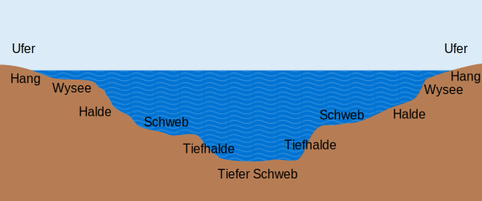

Der Bodensee
Daten & Fakten
| Gesamtfläche | 571 km2 |
| Wasserspiegel | 395 ü.N.N. |
| Uferlänge | 263 km |
| Größte Tiefe | 254 m (zwischen Fischbach und Uttwill) |
| Größte Breite | 14 km (zwischen Friedrichshafen und Arbon) |
| Länge | 63 km |
Querschnitt
Schematischer Querschnitt zwischen Friedrichshafen und Romanshorn.

Wasserpegel
Der Wasserpegel des Bodensees kann bis zu 2 m schwanken. Deswegen ist es unerlässlich
stets den aktuellen Wasserstand zu kennen um sicher auf dem Bodensee unterwegs zu sein.
Der Normalpegel liegt bei 2,50 m beim Konstanzer Pegel.
Der Tagespegel kann auf diversen Websites
wie z.B. www.mein-bodensee.com/pegel/ eingesehen werden.
Tempolimit
Auf dem gesamten Bodensee gelten spezifische Tempolimits.
| Ober und Untersee | 40 km/h |
| Alter Rhein | 10 km/h |
| Seerhein | 10 km/h |
| Hochrhein Talfahrt | 20 km/h |
| Hochrhein Bergfahrt | 10 km/h |
Naturschutz
An den Ufern des Bodensees gibt es zahlreiche Naturschutzgebiete, die verschiedenste Wasser- und Sumpfvögel beherbergen. Um dieses Erbe zu bewahren gelten in den Naturschutzgebieten genaue Regeln.
- Es ist verboten in den Naturschutzgebieten anzulegen und sie zu betreten.
- Es ist ein Mindestabstand von 25 m beim anlegen vor der Schilfkante einzuhalten.
- Es dürfen keine Motorboote in der Uferschutzzone (300 m) fahren.
- Das An- und Ablegen muss stets senkrecht zum Ufer und auf kürzestem Weg ablaufen.
- Die Höchstgeschwindigkeit beträgt 10 km/h